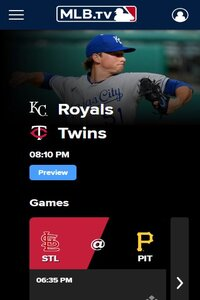

CONTRAST
Hulu
www.hulu.comHulu's mobile site actually looks really good and is easy to navigate through due to it's great use of contrast. The bright green of the logo and white accents contrast greatly with the stark black and dark grey background colors used in their design. These colors also pair nicely together which adds greater depth to the contrast on the page.
ALIGNMENT
MLB.TV
www.mlb.tv MLB.TV's mobile site shows is intuitive for a mobile screen with minimal elements on the page and large, easy to read cards/buttons that users can easily access. This site is also a strong example of the design principle use of alignment. The left-hand side has very strong/hard edge in which all of the elements follow all the way down the page.
PROXIMITY
YouTube
www.youtube.comYoutube's mobile site is the least intuitive of the sites I found, which is surprising for such a large company that is mostly based off of the large amount of web traffic to their site. It's very cramped feeling, but makes good use of proximity. Each video section header is close to the videos that it represents and the videos in that section are grouped together horizontally.